Back on the 10th, my friends Kohi, AWL420, and Kappa came out to hang out with us! Kohi told us there was going to be northern lights that night. I kinda didn't believe her, but it was true.
We went outside in the middle of nowhere with very little light pollution. No one saw more than a few boring smudges in the sky. When the cameras came out, everything changed. My aiPhone wasn't able to get any interesting shots, but everyone else has some weird samsung tech that got them some decent photos.
I didn't edit any of these photos, only resized. In photos taken in the same spot directly after another, it was pretty clear these dudes were moving and changing quickly.
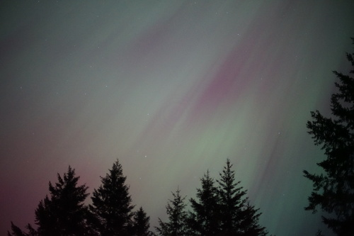 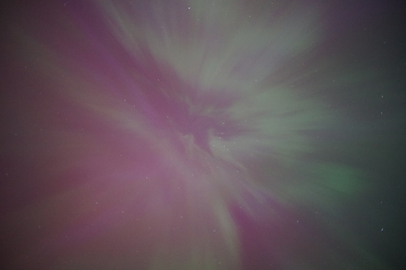 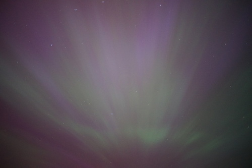 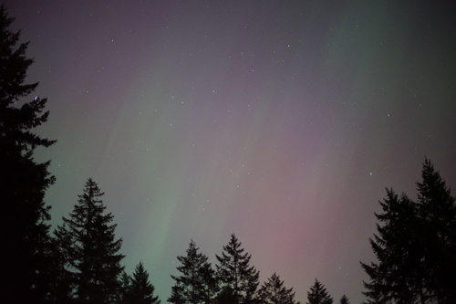 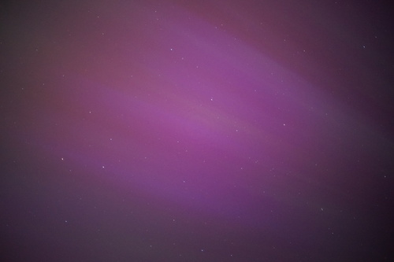 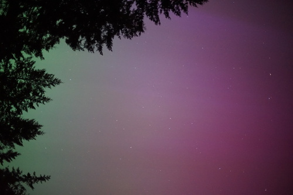 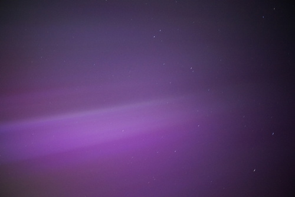 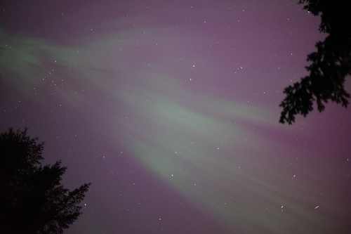 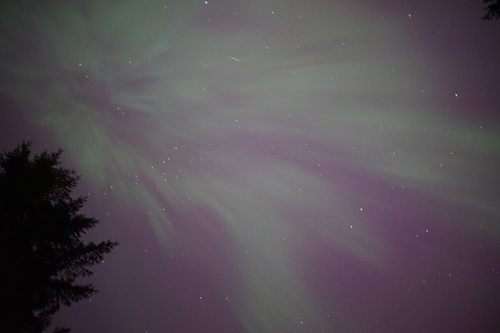 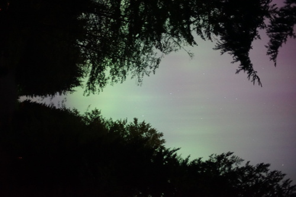 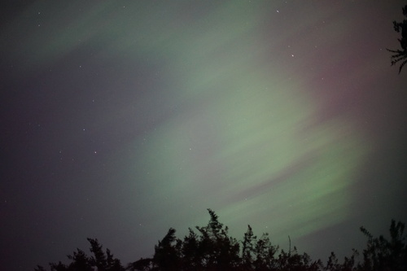 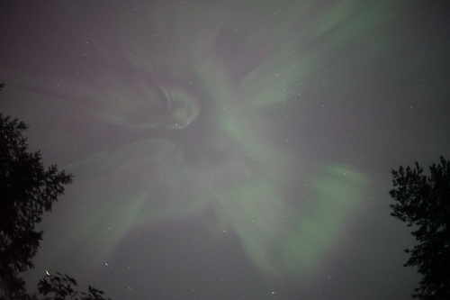 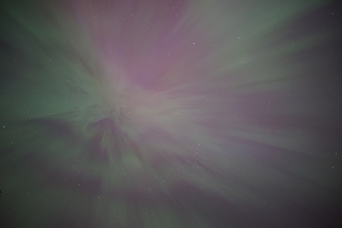 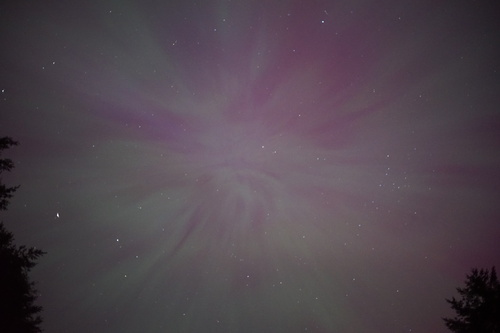 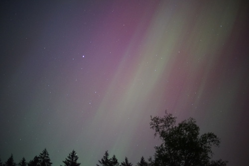 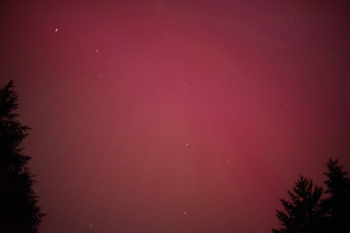 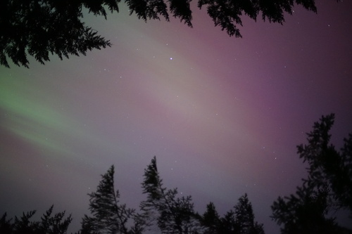 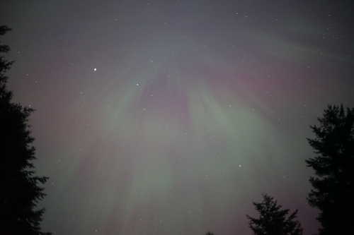 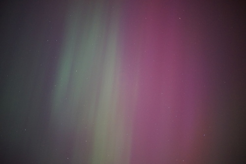I wish I had brought my tripod, but I didn't expect to see this at all! Warn me next time :3
If I had put down my camera and adjusted my eyes, I may have been able to see all of this, but instead I just took a lot of photos. It was a lot of fun!
There's a strange circular artifact that appears near the center of all these photos. I still haven't checked to see if it's my lens or my sensor ;_;

I received an overwhelming number of emails asking me for proof of the last Saturn haul! Okay guys!! Here it is!
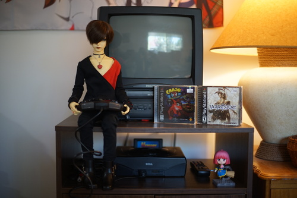Too cool to be true right? I actually AI generated this image. Consider yourself: Fooled.
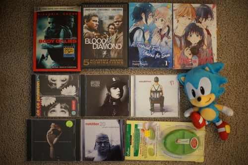We watched this last night and he does NOT kiss the girl
looks like yuri but is it cute??
I saw this in the window as I was leaving and had to go back in to buy it.
I hate to admit I haven't listened to my 4 other Janet Jackson CDs yet, but I did want this one a lot.
I didn't buy it for myself, I bought it for RYAN!
Ryan's. I already had a copy but he didn't.
Okay okay I'll give back my mom's magnetic pin holder that I stole almost 10 years ago. This one has a cover too!
Ryan's. I didn't expect this to expect this to exist but I suppose the time period does line up.
I didn't want to open my sealed copy, so I bought another. I am sad to say online multiplayer is no more. Don't tell anyone, but last time I played online, I turned into a gaming goblin.
I was having a great time arguing over "arse phone" with the card shop guy and then asked him if he could sell me a 10 cent MTG card of a cowboy. He bought this $25(?!?!) pack and gave me all the cards he didn't want from it instead.